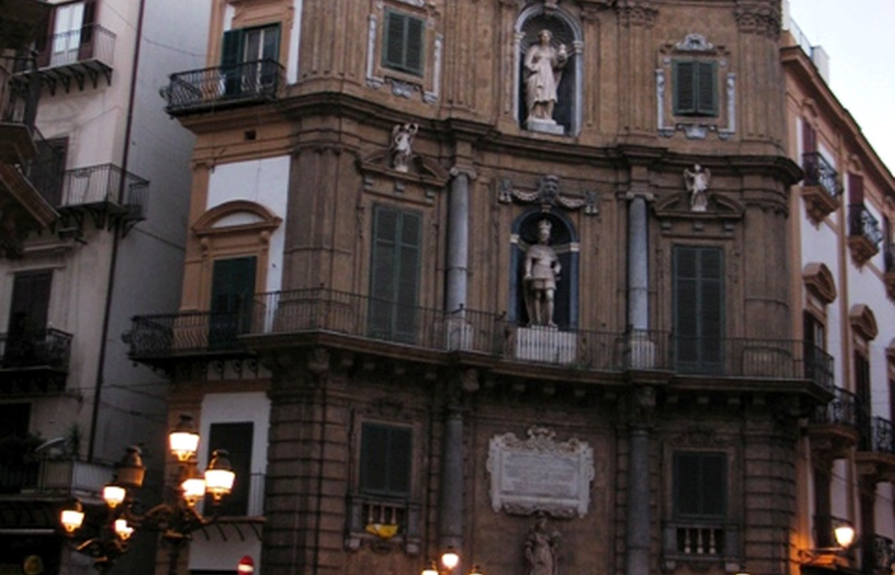

Contesto e identità
Non è una piazza tradizionale ma un dispositivo urbano: quattro facciate curvilinee definiscono un punto di orientamento e una scenografia continua. È un caso perfetto per leggere assi, simmetrie e rapporti tra potere civile e religioso.
Cose da notare
- Le facciate come 'quattro quinte'
- Dettagli di statue e nicchie
- Scatti in movimento per energia urbana
Gallery

